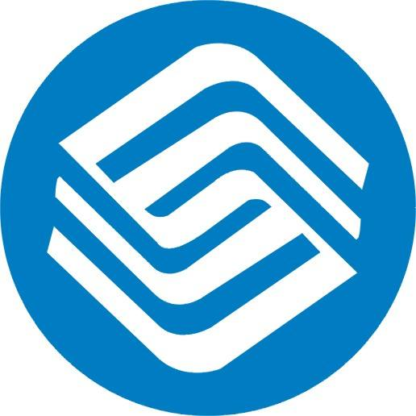

| 姓名 | | 周俊涛 |
| 职业 | | web前端工程师 |
| 邮箱 | | 191136674@qq.com |
| 所在地 | | 成都 |
| 前端工作经验 | | 3年+ |

html(85%)
|
css(85%)
|

javascript(80%)
|
|
jquery(80%)
|

vue2.x(80%)
|

angularjs1.x(75%)
|
| 2016.5-Now | | 亚信科技成都分公司 |
| 2013.9-2016.3 | | 西门子成都分公司 |
| 2010.9-2013.9 | | 鸿富锦有限公司 |
|
爪娃儿应用/移动端web app
职责：前端负责人（网站重构及核心代码编写，组件设计拆分）
该网站有论坛系统，商城系统，视频系统，领养系统等功能。该平台采用html5，css3，JavaScript，jquery，Angularjs，Mui等技术实现。
|
|

移动网络巡检网站
职责：前端负责人（技术选型，核心编写，指导初级开发人员）
该网站用于检查湖南省移动网络情况及各市线网路由情况，网络稳定情况和网络故障情况，由后台通过shell脚本抓取相关数据再由ajax到前端显示。该网站采用VueJs，Element，ES6，webpack等技术实现。
|
本人是对前端技术极度热爱的前端工程师。
喜欢折腾新技术，紧跟发展潮流，不断学习进步。
主攻前端开发和新技术的探索学习
两年独立前端开发经验，极强的解决问题能力。
负责前端技术选型，架构设计，组件拆分及实现，技术难点解决。
指导初级工程师及团队技能提升。
团队代码规范指导和代码review。

react(60%)
|
es6(60%)
|

bootstrap(60%)
|
|
git(60%)
|
thinkphp(50%)
|

nodejs(50%)
|
| web前端工程师 |
| web前端工程师 |
| 研发工程师 |
|
设备工单CRM系统网站
职责：前端开发
个人完全负责完成的第一个前端项目，该系统用于内部人员上报工单，统计一定周期内的故障时间，故障原因，和维修时间。该系统采用html5，css3，JavaScript，jquery，gulp等技术实现。
|
|
公司备件CRM系统网站
职责：前端开发
个人参与的第一个项目，负责html,css及部分js代码编写，管理公司新购备件的入库，备件库存情况管理，备件领用管理，安全库存统计，采用html，css，JavaScript，jquery等前端技术用ajax与后台合作实现。
|